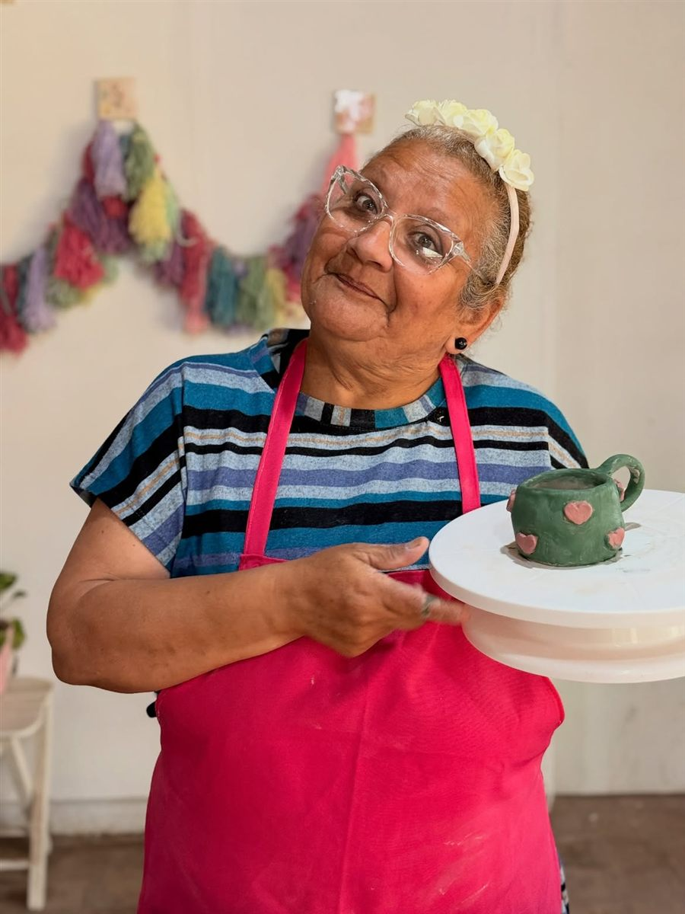
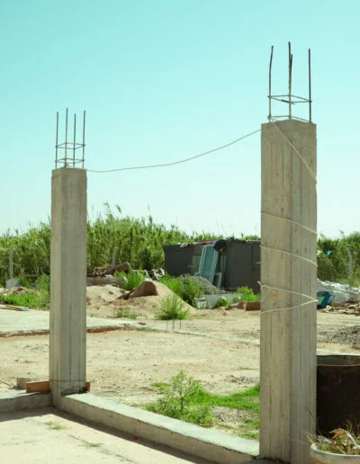
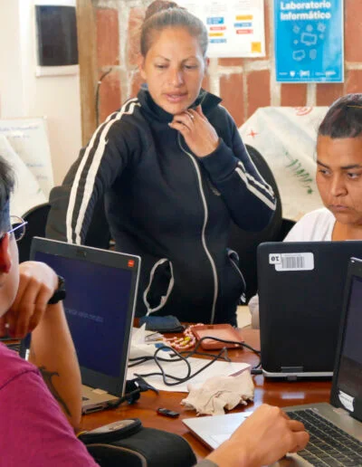
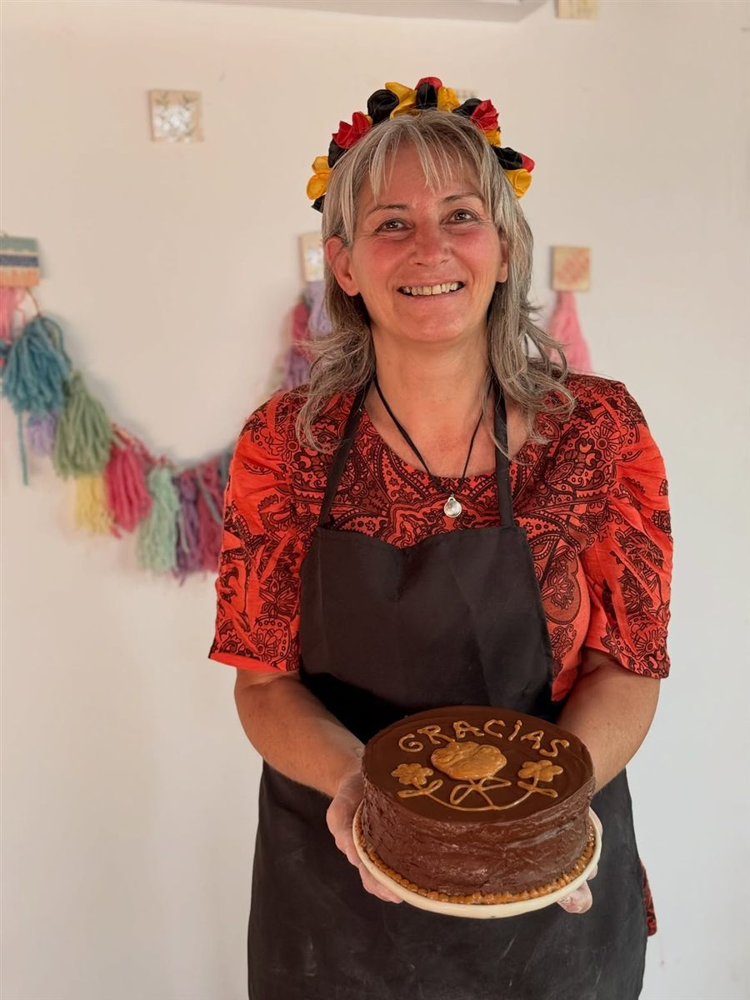
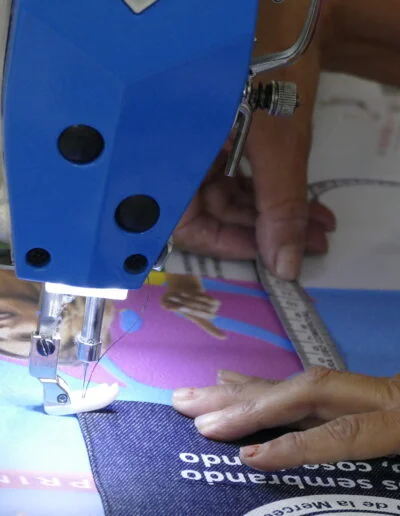

Nuestros talleres
Nuestras propuestas de formación
-

Oficios
Recuperamos saberes populares fomentando la reutilización creativa. Enseñamos a tejer, coser y crear muñecos y objetos únicos, dándole una nueva vida a retazos, lanas y telas en desuso.
Ver horarios y anotarme → -

Oficios
A través del reciclaje de papel y el trabajo con arcilla, desarrollamos piezas decorativas y utilitarias. Fomentamos la expresión artística, la concentración y la capacidad de generar productos listos para la venta.
Ver horarios y anotarme → -

Oficios
Un espacio para aprender a construir desde la sustentabilidad. Utilizamos barro, paja y materiales reciclados para levantar pequeñas estructuras o mejorar espacios, siempre priorizando el trabajo colectivo y el respeto por la tierra.
Ver horarios y anotarme → -

Digital
Buscamos reducir la brecha tecnológica brindando herramientas clave para la vida cotidiana y el mundo laboral. Enseñamos desde cero: uso de la computadora, navegación en internet, manejo de redes sociales y reparación de PC y notebooks.
Ver horarios y anotarme → -

Oficios
Compartimos recetas prácticas, sabrosas y accesibles utilizando productos locales. Las participantes aprenden a organizar la producción, ya sea para el consumo familiar o para dar el primer paso en su propio emprendimiento.
Ver horarios y anotarme → -

Oficios
Capacitamos en la confección de moldes para indumentaria y en el manejo de máquinas de coser, tanto domésticas como industriales. Creamos utilitarios textiles y trabajamos en la reutilización de uniformes y otros productos.
Ver horarios y anotarme →
Anotate a un taller
- Elegí el taller Mirá el día y el horario que te quedan cómodos.
- Completá tus datos Nombre, DNI y un teléfono con WhatsApp.
- Te confirmamos Te escribimos para darte la bienvenida.
Preguntas rápidas
¿Cuánto cuestan?
Son gratuitos.
¿Quiénes pueden participar?
Cualquier Mujer es bienvenida.
¿Tenés una idea para un taller o querés enseñar?
Buscamos talleristas voluntarias para sumar nuevas propuestas. Escribinos.